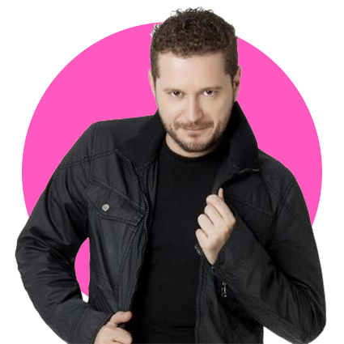
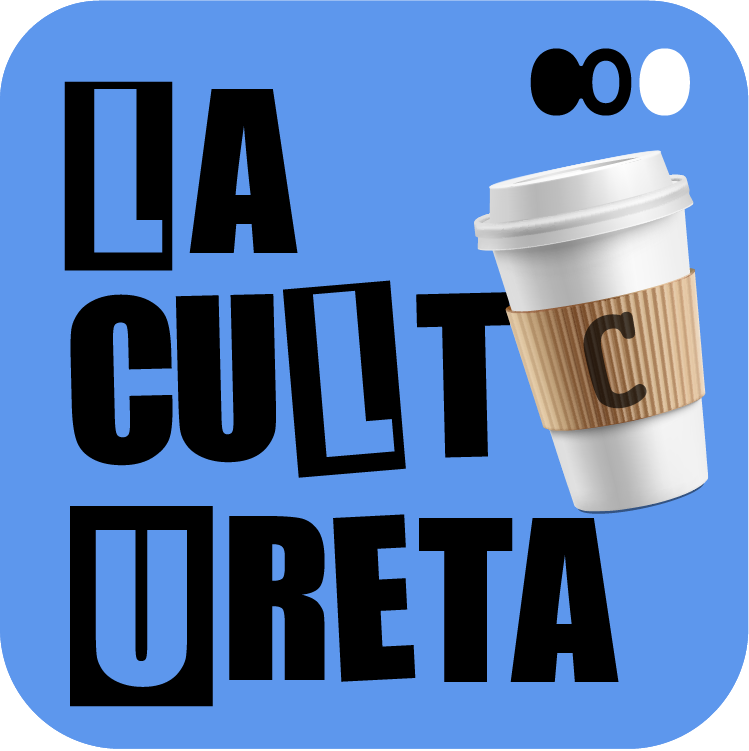
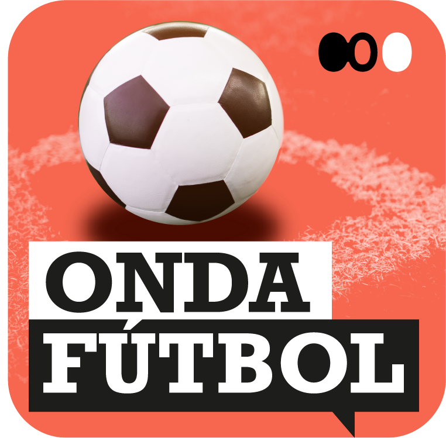
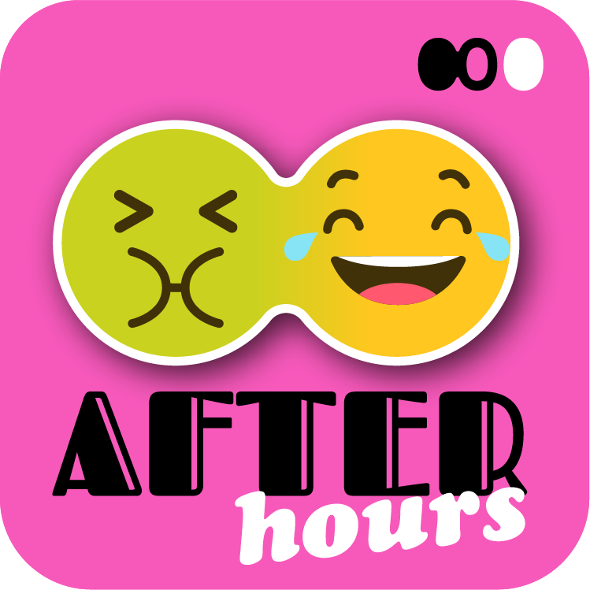

Estilo de imagen
Programas
La carátula de los programas está compuesta por un círculo del color de la categoría correspondiente y una imagen del locutor del programa. La imagen debe ser de plano medio y fondo transparente, y sobresalir ligeramente del círculo, de forma que genere algo de tridimensionalidad.

Podcasts
La imagen de los podcast está formada por una parte tipográfica con el nombre del podcast y una imagen ilustrativa que haga referencia a su contenido. El color de fondo es el de la categoría correspondiente.


